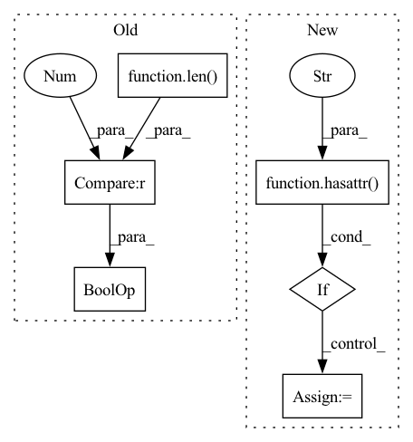

Pattern ID :10535

Before Change
return
// Build unique device id
if args.current_device_id is not None and len(str(args.current_device_id)) > 0:
unique_device_id = args.current_device_id + "@" + args.os_name + ".Edge.Server"
// Bind account id to the MLOps platform.
After Change
setattr(args, "version", version)
setattr(args, "log_file_dir", ServerConstants.get_log_file_dir())
is_from_docker = False
if hasattr(args, "device_id") and args.device_id is not None and args.device_id != "0":
setattr(args, "current_device_id", args.device_id)
is_from_docker = True
else:
setattr(args, "current_device_id", FedMLServerRunner.get_device_id())
setattr(args, "config_version", version)
In pattern: SUPERPATTERN
Frequency: 3
Non-data size: 6
Instances
Fragment ID: 36683821
Project Name: fedml-ai/fedml
Commit Name: 4bb12788e535570851437f1892e7e19597d8f0a1
Time: 2022-07-25
Author: alexliang.kh@gmail.com
File Name: python/fedml/cli/server_deployment/server_login.py
M Class Name: AnonimousClass
N Class Name: AnonimousClass
M Method Name: __login_as_edge_server_and_agent(3)
N Method Name: __login_as_edge_server_and_agent(3)
M Parent Class:
N Parent Class:
M File Name: python/fedml/cli/server_deployment/server_login.py
N File Name: python/fedml/cli/server_deployment/server_login.py
M Start Line: 18
M End Line: 58
N Start Line: 18
N End Line: 67
'>
Before Change
output_shape = self.compute_output_shape(self.input_shape)
// if isinstance(output_shape[0], (list, tuple))
cur_node = GraphNode(output_shape, name=self.name)
cur_node.module = self.module if len(args) == 0 and len(kwargs) == 0 else lambda inputs: self.module(inputs, *args, **kwargs)
cur_node.layer = self
cur_node.set_pre_nodes(inputs)
After Change
output_shape = self.compute_output_shape(self.input_shape)
// if isinstance(output_shape[0], (list, tuple))
cur_node = GraphNode(output_shape, name=self.name)
if hasattr(self, "call"): // General keras layers with call function, mostly own weights
cur_node.callable = self
else:
cur_node.callable = self.module if len(kwargs) == 0 else partial(self.module, **kwargs)
cur_node.layer = self
'>
Fragment ID: 36683820
Project Name: leondgarse/keras_cv_attention_models
Commit Name: 0bba0f214ddef4d448b10f4c6d16c2c08aacbcb6
Time: 2023-01-31
Author: leondgarse@gmail.com
File Name: keras_cv_attention_models/pytorch_backend/layers.py
M Class Name: Layer
N Class Name: Layer
M Method Name: forward(2)
N Method Name: forward(2)
M Parent Class: nn.Module
N Parent Class: nn.Module
M File Name: keras_cv_attention_models/pytorch_backend/layers.py
N File Name: keras_cv_attention_models/pytorch_backend/layers.py
M Start Line: 77
M End Line: 92
N Start Line: 90
N End Line: 99
'>
Before Change
return
// Build unique device id
if args.current_device_id is not None and len(str(args.current_device_id)) > 0:
unique_device_id = args.current_device_id + "@" + args.os_name + ".Edge.Server"
// Bind account id to the MLOps platform.
After Change
setattr(args, "version", version)
setattr(args, "log_file_dir", ServerConstants.get_log_file_dir())
is_from_docker = False
if hasattr(args, "device_id") and args.device_id is not None and args.device_id != "0":
setattr(args, "current_device_id", args.device_id)
is_from_docker = True
else:
setattr(args, "current_device_id", FedMLServerRunner.get_device_id())
setattr(args, "config_version", version)
'>
Fragment ID: 36683819
Project Name: fedml-ai/fedml
Commit Name: 957657ad12b9c6f3b308009b706572b976634faa
Time: 2022-07-25
Author: alex.gpt.llm@gmail.com
File Name: python/fedml/cli/server_deployment/server_login.py
M Class Name: AnonimousClass
N Class Name: AnonimousClass
M Method Name: __login_as_edge_server_and_agent(3)
N Method Name: __login_as_edge_server_and_agent(3)
M Parent Class:
N Parent Class:
M File Name: python/fedml/cli/server_deployment/server_login.py
N File Name: python/fedml/cli/server_deployment/server_login.py
M Start Line: 18
M End Line: 58
N Start Line: 18
N End Line: 67